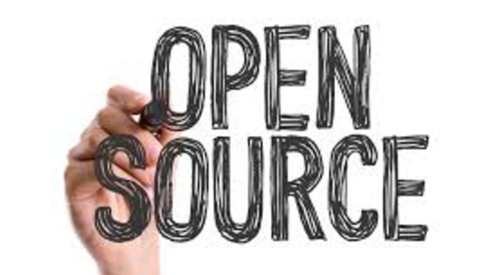
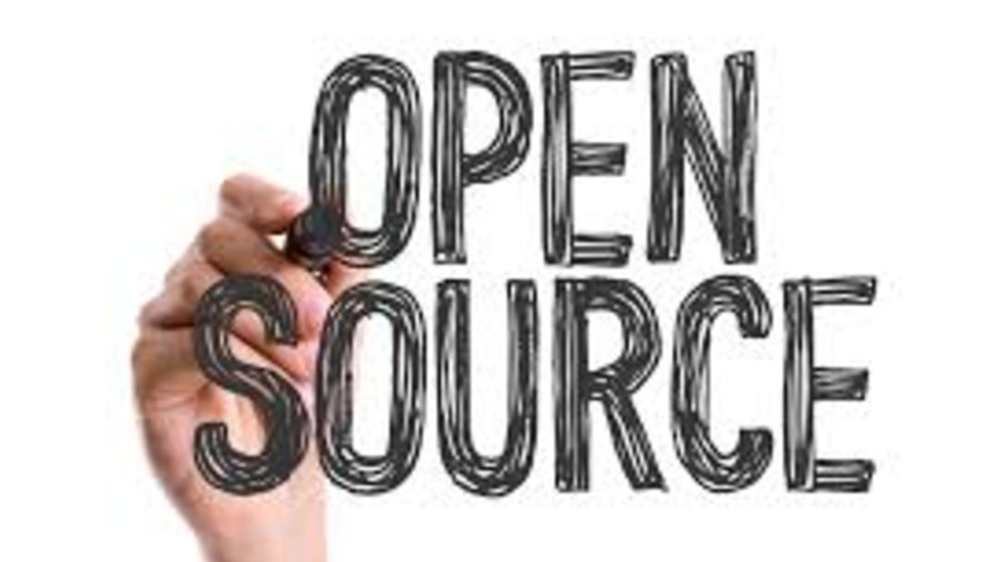

What to know about Mick Styers

Esse Quam Videri
Where else to begin than with a picture of my family and me. I am a married man of 16 years with two beautiful sons. I live in Clayton, North Carolina. I have spent the last 14 years of my professional career proudly serving the public of Raleigh, North Carolina, but always with a peripheral interest in computer science.
Throughout my career, hardwork and the pursuit of constant improvement have been the crux oy my professional development. I did not know it when I began my career, but my ability to continually work hard and improvement set me apart from my colleagues. I pride myself on letting my work speak for itself.
Early in my career, I attentively learned from my colleagues, applying the good and learning from the bad. The importance of collaboration and synergy grew from this experience. The team for which I was a part, was stronger and better if we worked together. This developed healthy and long-lasting friendships which will likely be with me the rest of my life.
The combination of a strong work ethic and the experiential knowledge of the importance of collaboration give me the tools and ability to excel in my next career endeavor. I have always valued the philosophy "To be, rather than to seem to be" or "Esse Quam Videri". This means more to me today than ever. I do not pursue anything lightly. I dedicate myself fully toward my goals and have the integrity to assume responsibility if I fail.
My Passions
 

I am always astounded at the creativity and endless possibilities on the web. I am inspired to learn and expand my knowledge so that creating and expressing myself on this platform remains fun and intrinsic. Since 2010, I have found the open source world to be very inspiring. To know that there are those out there who strive to share and spread their knowledge to others in an effort to grow a community of open source for everyone is a great sentiment to carry into this profession. I am excited to finally be a part of that contribution.

Over the years, I felt as though I missed my oppurtunity to contribute to the world of open source. Now I am faced with the great oppurtunity of embracing the open source community and collaborating with like minds to expand and creatively enhance it. I am thrilled and excited to join others in that expedition.
This is Rocket League!
I just want to code!